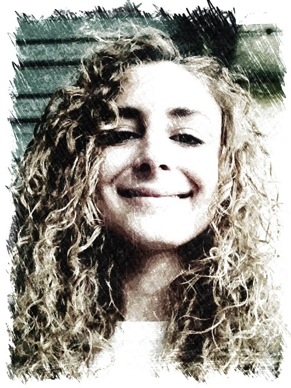

Eleonora TartagliaAdresse : 26 Avenue du Maréchal Juin 06400 Cannes Téléphone : 06.72.55.89.97 Email : eleonora.tartaglia@gmail.com |
 | |
ProfilExpertise approfondie dans le conseil personnalisé avec une réputation pour un service de qualité. Transition vers la programmation informatique avec un intérêt pour les technologies émergentes. Enthousiasme pour l'innovation et la créativité avec une détermination à réussir dans le paysage technologique en constante évolution. |
||
FormationInitiation à divers langages de programmation informatiqueEcole la Plateforme - Cannes-la-Bocca - Mars/Decembre 2023 Python, Développement front : HTML et CSS, Développement back : PHP et MySQL Licence en Sciences de la Vie et de la SantéUniversité de Valrose - Nice - Septembre 2009 / Juin 2014 Spécialisation en Biochimie Moléculaire et Génétique Animale Baccalauréat ScientifiqueLycée Horticol - Antibes - Juin 2009 Spécialisation Biologie |
||
Expérience professionnelleConseillère en VenteBoutique EV - Cannes - Avril 2019 Novembre 2022 Conseil personnalisé de la clientèle, Gestion d’une caisse et du stock via Kezia, Réassort, achats auprès de fournisseurs, Merchandising et préparation du Book. Conseillère au Pôle ServiceDarty - Cannes - Janvier 2017 Juin 2017 Création et suivi de dossiers de crédit, Traitement des réclamations, Archivage de données via Themis et Citrix, Gestion des stocks et de la caisse via l'AS400, CTI et Innovente, Edition de factures, remboursements, détaxe. Serveuse BarmaidRestaurant Le Globe - Nice - Janvier / Juin 2016, Le Manava - St Tropez - Aout / Septembre 2015, Bar le Sport 11 - Nice - Juillet / Aout 2013, Bistrot du Col de Bavella - Corse - Juillet / Aout 2012 Accueil et placement de la clientèle, Gestion de la caisse, Prise des commandes et service en salle. Animatrice pour petites et moyennes sectionsEcole La Tousque et Ecole les Orangers - Le Cannet - Juillet / Aout 2014 et 2016 Réalisation d’animations en lien avec un projet pédagogique, Accueil des enfants selon des règles de sécurité, Gestion des premiers secours en cas d’accident. Conseillère en Vente à distanceConvers Telemarketing - Nice - Janvier / Avril 2011 Présentation et ventes de services à une clientèle. Assistante administrativeINPI - Sophia Antipolis - Juillet / Aout 2010 et 2011 Contrôle qualité de la diffusion des données Brevets sur Espacenet, Impression des dépôts, vérification de leur conformité et mise sous pli, Inventaire et tests de contrôle d'accès. |
||
CompétencesMaîtrise des logiciels de bureautique de base, Rédaction et gestion de documents Gestion des appels téléphoniques, Capacités d'organisation et de planification Attentionnée au détail, Souriante et dynamique Utilisation du CTI et de l'AS400, Formation aux Premiers Secours |
||
LanguesItalien Niveau C1 Anglais Niveau B1 |
||
Centres d'intérêtArts, Littérature, Photographie, Décoration, Danse classique |
||